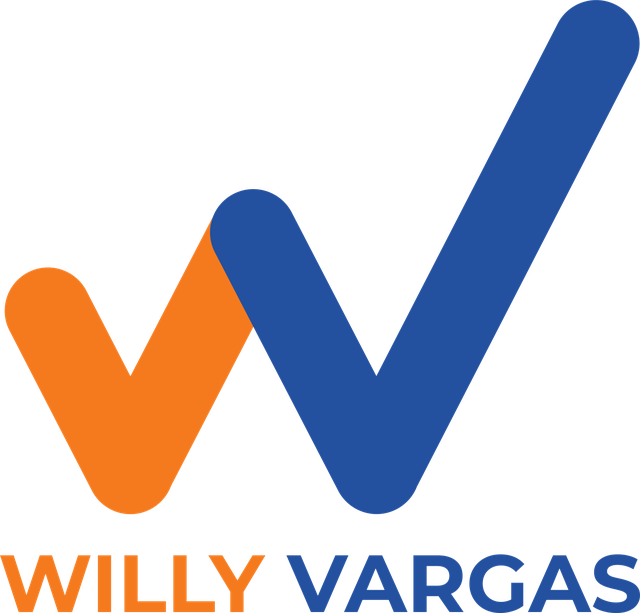

Eje 1
Vías y obras que se cumplen
Un tablero público y mensual de compromisos: qué se firmó, qué tiene contrato y qué se ve en el terreno.
Boyacá no come cuento.
Nació en Pauna y trabaja por todo el departamento. Quiere una Asamblea que haga control político con datos, formule proyectos que sí lleguen al territorio y le rinda cuentas a la gente.

Wilinton Yair Vargas Caro es boyacense de Pauna. Tiene formación en electrónica y en gestión de proyectos, y una trayectoria armando, siguiendo y midiendo proyectos públicos y privados en Boyacá y en otros departamentos.
Ha trabajado con comunidades, juntas de acción comunal y entidades territoriales. En 2023 obtuvo 4.877 votos a la Asamblea. En 2027 busca la curul con organización, un mensaje claro y presencia en todo Boyacá: rural y urbano.
Un tablero público y mensual de compromisos: qué se firmó, qué tiene contrato y qué se ve en el terreno.
Escuela de proyectos veredales: enseñar a formular proyectos para que las ideas de jóvenes y JAC sí puedan salir.
Ruta del agua veredal y economía solidaria: proyectos asociativos con regalías y cooperación, con seguimiento real.
Si quieres ser voluntario, líder en tu municipio o recibir noticias de la campaña, escríbele a Willy. También puedes seguirlo en redes.